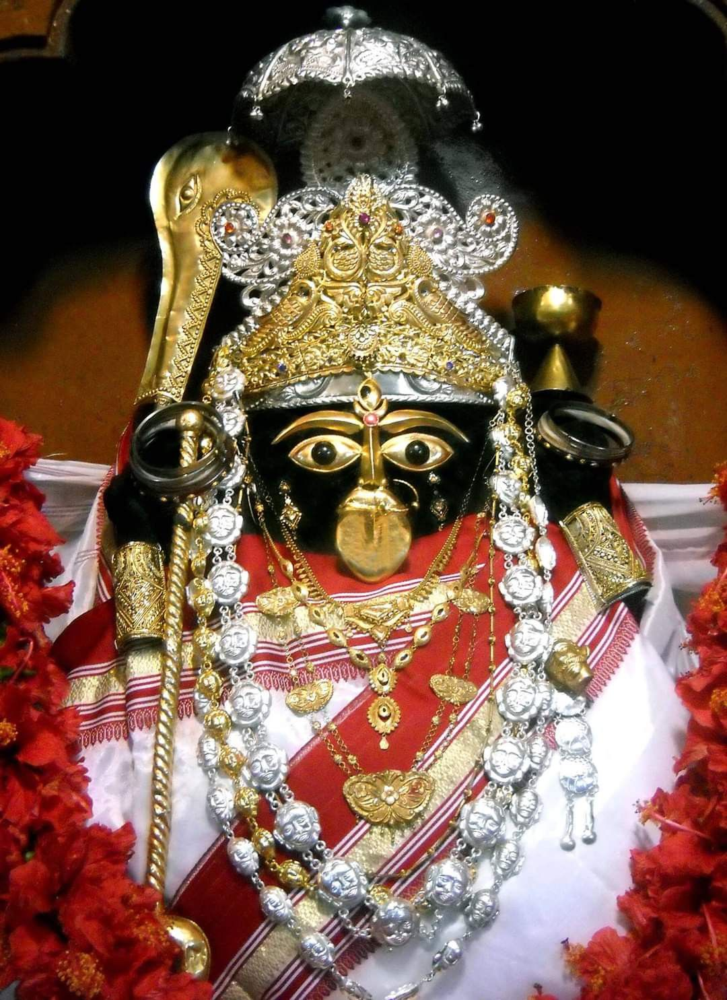
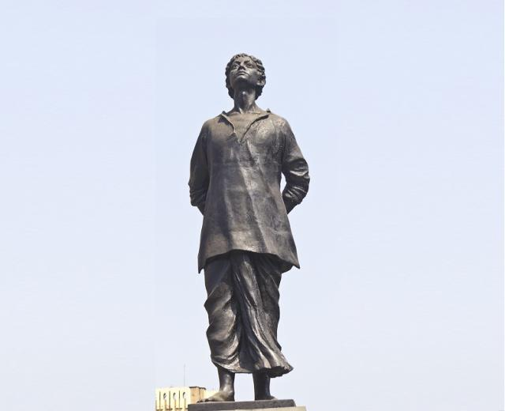
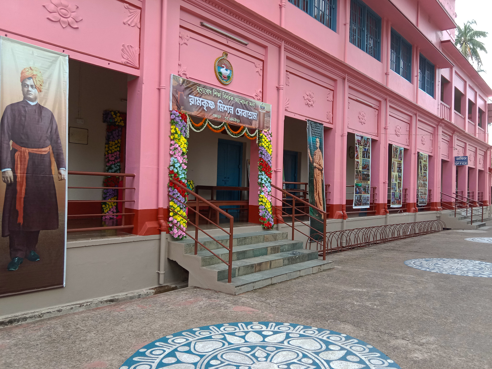
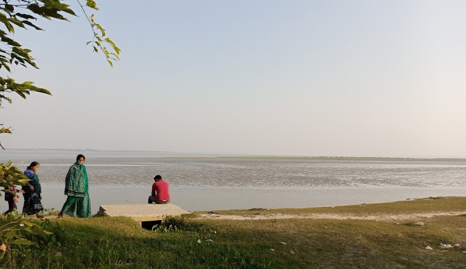
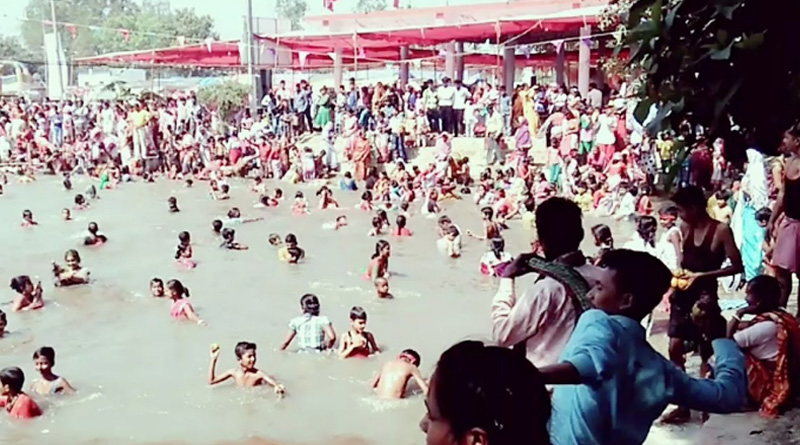
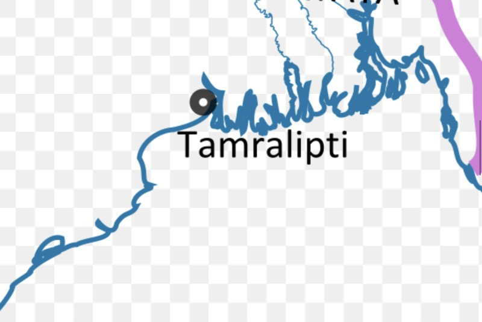

Tamluk, the ancient city of Bengal, is known for its rich history and heritage. Once a thriving port city, Tamluk is home to many archaeological wonders and is steeped in cultural significance.

Top Attractions
Explore the timeless beauty of Tamluk:
Bargabhima Temple: A historic temple dedicated to Goddess Kali. Legend has it that the hill was cut down during Lord Shiva's Tandava Nritya after Sati's demise.
Tamluk Rajbari: The palace showcasing the royal heritage of Tamluk.
Hamilton High School: One of the oldest educational institutions in the region.
Rupnarayan River: A serene river that adds to the beauty of Tamluk.
Ramkrishna Mission: A center of spirituality and education in Tamluk.
Tamluk Museum: A treasure trove of archaeological artifacts and historical items.
Kapalmochon Ghat: A scenic ghat offering tranquil views and cultural significance.
Historical Points
Khudiram Bose: Khudiram Bose, a brave freedom fighter, was a student of Hamilton High School. He played a key role in the Indian independence movement, known for his courageous efforts.

Ashram: Tamluk is home to several spiritual centers, including Ashrams that continue to inspire many in the pursuit of peace and enlightenment.

Rupnarayan River: The Rupnarayan River flows gracefully through Tamluk, offering scenic beauty and serene surroundings for both locals and visitors.

Kapalmochon Ghat: A picturesque ghat located on the banks of the Rupnarayan River, known for its spiritual significance and tranquil atmosphere."Lord Krishna's residence has historical significance, and it is believed that he once visited this Kapalmochon Ghat.

Hamilton High School: The Hamilton High School, where Khudiram Bose studied, is one of the oldest educational institutions in the region and continues to uphold its legacy.
Tamralipta Bondor: A significant ancient port of Bengal, Tamralipta Bondor was a thriving trade hub in the past. It played a vital role in the maritime trade with Southeast Asia.

Heuen Sang: Heuen Sang, the famous Chinese scholar, visited Tamluk during his travels to India. His visit is part of the rich cultural history of Tamluk.
.jpg)
.jpg)